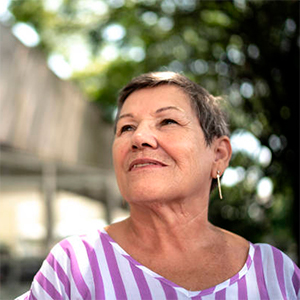
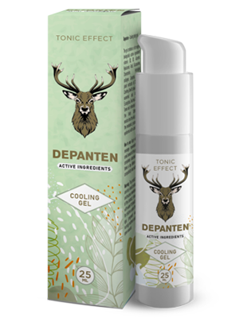

Dėl kelių ir nugaros skausmų sunkiai galėjau vaikščioti. Tabletės, injekcijos ir operacijos man
neturėjo jokios įtakos. Atvirkščiai: jie atėmė mano pinigus ir energiją. Aš nežinojau, ką
daryti. Laimei, aš sužinojau apie šį įrankį. Ir kaip gerai, kad aš tai padariau! Jau nuo pat
pirmos sesijos jaučiausi geriau. Per mėnesį ar daugiau Jauciuosi kaip nauja.
Ilgai vaikštau ir prižiūriu sodą, kurį su anūke pasodinome. Skausmas pamirštas. Ačiū!
★
★ ★ ★ ★
Marta Šturmienė, 73 metų

Paprastumas ir efektyvumas
Sunku patikėti, kad toks paprastas būdas toks veiksmingas, užtenka išgerti priemonę ir mėgautis
judesiais be diskomforto per kelias dienas. Mano sesuo, pusbroliai ir aš jį naudojome ir
rekomenduoju visiems. Atsisveikinkite su sąnarių diskomfortu.
★ ★ ★ ★
★
Izabelė Rudytė 67 metų
Aš jaučiuosi reikalingas.
Sunkaus darbo įmonėje metai nualino mano kelius. Anūkams pažadėjau, kad su jais žaisiu futbolą
ar važinėsiu dviračiu, bet dėl skausmo negalėjau. Vaikai šių dalykų nesuprato ir buvo sutrikę.
Jaučiausi nenaudingas. Kol dukra privertė mane išbandyti . Iš
karto
pajutau skirtumą.
Jau mėnuo, kai jį naudoju ir jaučiuosi nenugalimas, dabar kaip ir anksčiau galiu leisti laiką su
šeima, ypač anūkais.
★
★ ★
★ ★
Jonas Slušnys 67 metų
Aš gražinau savo gyvenimą.
Perteklinis svoris ir ilgas darbas sunaikino kelius, negalėjau pakęsti skausmo, todėl per dieną
išgerdavau daugiau nei 10 tablečių. Bet jaučiausi apsvaigęs ir mieguistas, negalėjau normaliai
gyventi. Laimei, šį nuostabų produktą rekomendavo darbo kolega. Tai pasirodė tobulas sprendimas.
Skausmas dingo tarsi burtų keliu, ir vėl susidomėjau kirpėjos darbu. Atgavau sveikatą, kuri
leido pradėti treniruotis ir... Aš numečiau 10 kilogramų! Невероятные перемены.
★
★ ★ ★ ★
AgnėGudžiūnaitė 43 metų
Mano žmona nustojo skųstis.
Namuose žmona man visada randa ką veikti: sutvarkyti maišytuvą, perkraustyti spintą ar ką nors
nudažyti. Kaip aš turėjau pasilenkti ir įsitempti, jei nugara sugenda? Taip pat alkūnės ir
keliai. Laimei, gelis padėjo mano stuburui ir sąnariams
atsigauti.
Jaučiausi lyg
numetęs svorio, kurį nešiojau daugelį metų. Mano žmona nustojo skųstis, kad nenoriu jai padėti
namuose!
★ ★ ★
★ ★
Sigitas Prūsaitis 67 metų
Grįžau į darbą
Įsivaizduokite, ką reiškia nepajudinti vienos rankos. Sunku, ar ne? Man būtent taip ir nutiko,
nes skaudėjo pirštus, rankos buvo patinusios ir drebėjo. Esu juvelyras, tai mano darbas ir
aistra. Vis dažniau tekdavo uždaryti savo mažą dirbtuvę, ir dėl to pinigai namuose prastėjo. Aš
pradėjau ieškoti būdų atkurti sąnarius ir visur man sakė, kad geriausias yra šis produktas
. Aš pabandžiau, ne tikrinant jo, bet per 20 dienų mano
rankos
buvo
sveikesnės, nei prieš 10 metų. Galėjau grįžti į darbą!
★
★ ★ ★
★
Romas Žilėnas, 55 metų
Naujas gyvenimas pagal tokį mažą kainą
Paprastai, jei kažkas veiksminga, tai turi būti brangu. Taip atsitiko su mano asmeniniu masažo
terapeutu, kuris man kainavo keturiolika tūkstančių per mėnesį ir turėjo daryti stebuklus.
Tačiau priešingai – nuo to viskas tik pablogėjo, o sąnarius ir stuburą skaudėjo dar labiau.
Kai svainis patarė pabandyti , Maniau, kad tai visiška nesąmonė.
Kaip man
gali
padėti gelis, kai tariamai fenomenalus masažuotojas man nepadėjo? Jums būtų matę mano veidą, kai
skausmas dingo. Tiesiog stebuklas!
★
★
★ ★ ★
Rūta Daunoravicė 67 metų
Vienintelis efektyvus metodas
Išbandžiau įvairius būdus, kaip atsikratyti klubų traškėjimo ir skausmo. Niekas nepadėjo. Dar
blogiau, degeneracija išplito į stuburą. Su viskas įvyko
atvirkščiai.
Aš
nebesijaudinu dėl savo sveikatos nes esu 100% sveikas!
★
★ ★ ★
★
Irma Valeikienė 59 metų
Po 14 dienų pamiršite sąnarių ir stuburo skausmus – efektą
garantuoja nepriklausomi tyrimai
Sveiki,
Esu profesorius Luisas Recio, mokslininkas ir molekulinės biologijos specialistas. Čia noriu
supažindinti jus su didžiausiu savo gyvenimo pasiekimu. Sukūriau metodą, kuriuo bet kas gali pašalinti
skausmą, taip pat atkurti sąnarius, stuburą ir tuo pačiu atgauti 100% mobilumą vos per 14 dienų.
Taigi, jei norite, BE cheminių ir neveiksmingų vaistų:
Malšinti sąnarių ir stuburo skausmus pajusite palengvėjimą iškart pritaikę metodą;
Atkurti ir sustiprinti sąnarius, sausgysles, raumenis ir stuburą 87%, kad jie
veiktų kaip nauji;
Grąžinti 100% fizinės sveikatos problemų. ir nereikia bijoti tapti neįgaliu;
Pašalinkite sąnarių ir stuburo standumą ir tirpimą, gražinti komfortą ir judėjimo
jausmą;
Apsaugoti savo sąnarius ir stuburą nuo sunaikinimo ir daugelį metų išlaikyti
absoliučią fizinę sveikatą;
Pašalinti degeneraciją, uždegimą ir kita - sumažinti skausmą ir grąžinti komfortą
kelyje;
Atkurti organizmą po lūžių, patempimų ir traumų;
Ir dėl šito turi 3 kartus daugiau energijos ir vėl džiaugiuosi
gyvenimu!
Turėtumėte žinoti, kad visa tai galima pasiekti be pavojingų operacijų, brangių gydymo būdų,
nesibaigiančio laukimo eilėje pas specialistus (kurie irgi pasiduoda nieko nepadarę...) ir neįsigėrus
nuodingų cheminių medžiagų (kenksmingų kepenims, skrandžiui ir inkstams). ) ...ir
pagaliausutaupyti tūkstančius eurų. Jei norite tai padaryti, turėtumėte perskaityti,
ką turiu jums pasakyti.
Nesvarbu, kiek jums metų ar kiek laiko kenčiate nuo sąnarių ar stuburo skausmo. Nesvarbu, ar tavo kaulai
girgžda 2 dienas ar 20 metų. Net jei gydytojas jums pasakė, kad jūsų sąnariai ir stuburas yra visiškai
sunaikinti ir jūs praradote viltį normaliam gyvenimui... Jūs turite žinoti, kad jau po 14 dienų
galėsite mėgautis 100% mobilumu. Be skausmo!
Sužinokite, kodėl mano metodas yra alternatyva neveiksmingiems būdams kovoti su sąnarių
skausmu:
Malšina skausmą iš karto po naudojimo, o per 14 dienų pašalina jį visam
laikui;
saugus kūnui: stambiamolekulinė formulė yra 100% natūralaus gelio pavidalo, kuris
veikia visiškai harmoningai su žmogaus kūnu.
atstato net labiausiai pažeistus sąnarius ir stuburą todėl, kad jie veikia kaip
nauji, be skausmo;
jį lengva naudoti ir kiekvienas gali gydytis namuose pats, o ne laukti gydytojų
laukiamuose ir maldauti pagalbos;
leidžia sutaupyti tūkstančius eurų užuot eikvoję jį brangiems ir neveiksmingiems
chemikalams ir terapijoms.
Sukūriau natūralų metodą, kuris atkurs Jūsų pažeistus sąnarius ir stuburą
Ačiū jam pamiršite skausmą ir visiškos negalios baimę... Visos problemos, kurias
kamuoja dėl silpnų sąnarių ar silpno stuburo, liks praeityje. Visiškai atsikratysite ne tik skausmo, bet
ir sustingimo, spazmų bei patinimų. Galiausiai galėsite padaryti viską, ko negalėjote padaryti dėl
skausmo.
Galite be problemų lipti laiptais, pasilenkti, neštis anūkus ant rankų. Galite saugiai prižiūrėti sodą,
vaikščioti, važinėtis dviračiu, šokti! Ir visa tai todėl, kad man pavyko sukurti naujovišką formulę
atkurti sąnarius ir grąžinti jiems visišką mobilumą. Kaip aš tai padariau?
Aš norėjau išgelbėti savo motiną nuo negalios
Naujausių tyrimų duomenimis, kas trečias Italijos gyventojas nuo 36 iki 95 metų turi sąnarių ar stuburo
problemų. Šie žmonės dažnai to net nesuvokia, mano, kad normalu, kad kartais kūną skauda, sustingsta
ar spusteli. Tačiau dauguma jų turi didelę riziką didelę sumaištį kremzlių ir
degeneracijos, kurie gali sukelti neįgalumą.
Deja, ši problema palietė ir mano mamą. Iš pradžių jai buvo sunku lipti laiptais ar pakilti nuo sofos.
Bet paskui viskas pablogėjo... Sodas, kurį jai buvo malonu prižiūrėti, pradėjo apaugti piktžolėmis, nes
ji negalėjo jo prižiūrėti. Ji nustojo mūsų kviesti į šeimos vakarienes. Ji darėsi vis irzlesnė ir
liūdnesnė. Tada dėl kelių, klubų, stuburo ir alkūnių skausmų ji net negalėjo nusiprausti.
Tai buvo pavojinga jos gyvybei!
Blogiausia, kad jos nejudrumas ėmė kelti grėsmę jos gyvybei. Niekada nepamiršiu tos dienos, kai atėjau
pas mamą nuvesti pas gastroenterologą. Mano mama tiesiog turėjo pereiti gatvę ir... jos vos nepatrenkė
automobilis! Dėl skausmo ji vaikščiojo labai lėtai, ir staiga jos kelias tapo toks sustingęs ir
skausmingas, kad ji negalėjo padaryti nė žingsnio. Vairuotojas paskutinę akimirką
stabdė...
Supykau pamačiusi pilną mamos krepšį įvairių reklamuojamų gaminių sąnariams. Paaiškėjo, kad ji juos
paėmė saujomis. Taip tapo aišku, kodėlpas ją skrandžio opos, kepenų sutrikimai ir kitos
skrandžio problemos... Moteris norėjo kažką daryti, tačiau šie vaistai ne tik nepadėjo, bet
ir visiškai apnuodijo jos organizmą.
Kaip išradau nesunaikinamų jungčių „patentą“?
Teko padėti mamai atgauti sveikus sąnarius, o kartu ir sveikatą bei gyvenimo džiaugsmą. Norėjau, kad ji
būtų nuostabi močiutė mano anūkams, kaip ji buvo nuostabi mama man. Tada pagalvojau: „Žmogau, tu esi
mokslininkas! Dalyvavote atrandant daugybę medžiagų, kovojančių su įvairiomis ligomis. Kodėl nesukūrus
sąnarius stiprinančio vaisto? Taigi pradėjau testuoti...
Per metus atlikau intensyvius laboratorinius tyrimus. Ant mamos išbandžiau įvairius veikliųjų medžiagų
derinius. Reikia pabrėžti, kad visi jie buvo 100% natūralūs ir saugūs organizmui.
Įkvėpiau vienuolinių žolelių receptų ir derinau juos su naujausiais molekulinės biologijos pasiekimais.
Mokslo žinios, tikėjimas gamta ir žiupsnelis sėkmės greitai pasiteisino: sugalvojau unikalią
stambiamolekulinę formulę.
Iš karto pradėjau atlikti didelio masto bandymus. Efektyvumas 98% patvirtino didžiausi
Europos ir JAV tyrimų institutai! Net bandymų metu mano makromolekulinė formulė natūraliai atkūrė
sąnarių ir stuburo funkciją tūkstančiams savanorių.
Nuostabūs efektai
Mamos skausmas atlėgo iš karto po vaisto vartojimo. Ji džiaugėsi, kad jos nebekankina tvinkčiojantys
skausmai keliuose. Tačiau tai buvo tik pradžia. Per savaitę jos sąnariai ir stuburas nebėra traškūs ir
sustingę. Tada dingo kelių ir alkūnių patinimas, dingo visi sąnarių ir stuburo uždegimai. Mano mama vėl
prižiūri savo mėgstamą sodą. Visi buvome nustebinti, kai ji staiga užlipo ant dviračio ir važiavo
laiminga!
– Kodėl taip lėtai vaikštai? – nekantriai paklausė ji, kai visi su šeima eidavome vakarieniauti. Ir mes
tiesiog neįpratome lėtai vaikščioti jos akivaizdoje. Jau po 3 savaičių mama su džiaugsmu prisipažino:
„Sūnau, mano sąnariai pasveiko. Jaučiuosi tokia pat judri kaip jaunystėje! Jūs išradote vaistą
nuo sąnarių skausmo! Kiek žmonių padėsi! Esu jums labai dėkingas“. Ir iš tiesų, mama per
85-ąjį gimtadienį iš laimės šoko su savo proanūkiais. O svečiai stovėjo išpūtę akis, kai pamatė, kokio
pavidalo ji!
Mama
visiškai atgavo judrumą, o kartu ir energiją bei gyvenimo džiaugsmą.
Iki šiol sąnarių ir stuburo būklės pablogėjimas bėgant metams buvo neišvengiamas. Šiandien mano
stambiamolekulinės formulės pagalba žmogaus skeleto sąnarių ir slankstelių dilimo procesą galima ne tik
pristabdyti, bet ir apversti.
Leiskite man tiksliai paaiškinti, kaip veikia mano Super Strong Joint Formula. Šis procesas yra gana
sudėtingas, bet pasistengsiu paaiškinti taip, kad jis būtų suprantamas net ne specialistui.
Nedelsdami sumažinkite skausmą ir regeneruokite sąnarius 24 valandas per parą
Bėgant metams susidėvi sąnariai ir stuburas, tačiau juos ardo ir antsvoris, sunkus fizinis darbas,
sunkių daiktų nešiojimas, per didelis krūvis, traumos, mėlynės. Sunaikinamos sinovijos skystis ir
kremzlės. Sąnariai yra tarsi neteptas vyris: jie pradeda nuolat trintis ir degraduoti. Laikui bėgant
pradedate jausti sustingimą ir baisų skausmą, kuris neleidžia normaliai judėti. Vystosi uždegimas ir
sunki degeneracija.
Deja, kremzlės ir sinovinio skysčio ląstelės neturi galimybės savarankiškai taisytis. Tai reiškia, kad,
skirtingai nei kitos žmogaus kūno ląstelės, jos negali atgyti. Štai kodėl jūsų sąnariai ir stuburas
kasdien blogėja. Žinoma, jūs nenustosite vaikščioti ir atlikti kasdienę veiklą, kad apsaugotumėte
sąnarius ir stuburą. Tai būtų absurdas.
Todėl mano užduotis buvo sukurti radikaliąformulę, kuri pašalins skausmą, atstatys pažeistus
sąnarius ir stuburą bei apsaugos juos nuo žalos ateityje. Ir man tai pavyko! Sukūriau
stambiamolekulinę formulę intensyviam regeneravimui. Aš pavadinau ją .
Unikali formulė akimirksniu įsiskverbia į pažeistas vietas ir išjungia elektrinius skausmo
impulsus ląstelių lygiu kad galėtumėte tęsti savo verslą be skausmo. Dėl savo savybių jis
skatina ląstelių mitybą, kuri atkuria regeneracinius procesus 300%. Tuo pačiu metu
natūralūs ingredientai skatina automatinio kremzlės ir sinovinio skysčio regeneracijos procesus.
Reguliariai naudojant šią formulę pakanka, kad regeneracija vyktų 24 valandas per parą. Jūs darote tai,
ką darote visada, o jūsų sąnariai ir stuburas atrodo jaunesni ir atgauna judrumą. Taigi degeneracija ir
skausmas amžiams išnyksta per 30 dienų. Be jokio šalutinio poveikio!
Kodėl mano makromolekulinė formulė buvo vadinama „stebuklingu priešnuodžiu nuo sąnarių
skausmo“?
TAI DAUGIAU NEI 98 % EFEKTYVIAI ATSTATO KREMZLĖS IR SINOVIJŲ SKYSČIUS
IKI
Sąnarys sunaikintas ir paveiktas degeneracijos bei
skausmo
PO
Atkurtas sąnarys: 100% sveikas ir neskausmingas
Kol kas tai gali atrodyti kaip stebuklas. Tačiau tai faktas, patvirtinantis mano mamos ir 14 tūkstančių
žmonių, kurie mano metodo dėka jau sugebėjo atkurti stiprius sąnarius ir stuburą, atvejį. Be to,
stambiamolekulinės formulės efektyvumasbuvo besąlygiškai įrodyta vokietijos tyrimų
centre Dortmunde. Tai pasaulinio lygio atradimas, pelnęs geriausių reumatologijos, ortopedijos ir
neurologijos sričių specialistų pripažinimą ir susižavėjimą. Kita vertus, vis gaunu emocingų laiškų iš
žmonių, kurie man dėkoja už „juos išgydymą“; tai yra pagrindinė priežastis, kodėl aš džiaugiuosi ir
didžiuojuosi šiuo atradimu.
100% SAUGUS IR LABAI PAPRASTAS NAUDOTI
Natūralūs ingredientai daro stebuklus: mokslui pavyko sukurti tobulą kompoziciją! Būtent šis šūkis
mane lydėjo kuriant makromolekulinę formulę sąnarių atstatymui. Tereikia sukamaisiais masažo
judesiais užtepti nedidelį kiekį priemonės, kol visiškai susigers 2-3 kartus per dieną, kad
pašalintumėte skausmą, o tada diena iš dienos mėgaukitės stiprindami sąnarius ir stuburą ir
sugrįždami į visavertį gyvenimą! (Poveikis priklauso nuo kiekvieno organizmo savybių)
Visi tavo draugai ir giminaičiai, kurie įpratę tave matyti skausmus, vos vaikštančius, bus
nustebinti. Pamatę jus bėgiojančią, važiuojančią dviračiu ir šokančią be skausmo, jie nepatikės, kad per
30 dienų atkūrėte sąnarius!
MOMENTINIS SKAUSMO PALENGVINIMAS
NATŪRALUS GYDYMAS BE JOKIŲ ŠALUTINIŲ POVEIKIŲ
SĄNARIŲ IR STUBURO ATKŪRIMAS

PAPRASTAS NAUDOJIMAS
100% FIZINIŲ GALIMYBIŲ PER 30 DIENŲ
TAUPYMAS TŪKSTANČIŲ EURŲ
Kaip galite praleisti šią galimybę įveikti skausmą ir amžinai atgauti sveikatą?
Galite ir toliau kentėti nuo baisaus sąnarių ir stuburo skausmo. Ar galite taip pat sugadinti savo
sveikatą kenksmingomis cheminėmis medžiagomis ir gyventi su už nugaros slypinčia negalios šmėkla? Bet
kodėl, jei aš garantuoju jums greitas, paprastas ir nebrangus būdas atgauti sveikatą be
skausmo? Jums tik reikia 30 dienų gydymo prisijungti prie 14 000 patenkintų vartotojų
kurie jau įveikė skausmą, atkūrė sąnarius ir stuburą, o dabar džiaugiasi
gera
sveikata!
Jūs niekuo rizikuojate!
Naudojant , jūs akimirksniu pašalinate skausmą ir per 30 dienų atkuriate
fizinį
mobilumą. Jūs niekuo nerizikuojate! Kaip pasaulinį pasiekimą, mano makromolekulinė formulė buvo gauta
prestižinė triguba garantija: originalumas, kokybė ir pasitenkinimas.
Triguba pasitenkinimo garantija
1. Garantija originalumas: stambiamolekuliniame agente
naudoja
formulę,
pagrįstą galingiausiomis medžiagomis, kurios atkuria sąnarius ir stuburą. Jo veiksmingumas patvirtintas
laboratoriniais tyrimais. Tai vienintelė tokia novatoriška formulė. Todėl galite būti tikri, kad gausite
originalų produktą, kurį galite įsigyti tik šioje svetainėje.
2. Kokybės garantija: dėl pažangaus stambiamolekulinės formulės gamybos proceso jis
atitinka aukščiausius kokybės standartus. Atsižvelgiant į Jūsų sveikatą ir savijautą, veikliųjų medžiagų
koncentracija parenkama tokia, kad gydymas būtų visiškai saugus. Ir visa tai tam, kad jo veiksmai 100%
pateisintų jūsų lūkesčius.
3. Pasitenkinimo garantija: Daugybė laboratorinių ir vartotojų testų patvirtina geresnį
veikimą . Dėl šių rezultatų įrankis sulaukė ekspertų iš viso pasaulio
pripažinimo, kurie
rekomenduoja jį savo pacientams. Jie įsitikinę, kad per 30 dienų atsikratysite sąnarių ir stuburo
skausmų, taip pat atgausite 100% mobilumą.
Pamirškite skausmą, atkurkite sąnarius ir per 30 dienų atgaukite 100% fizinės sveikatos
lengvai, saugiai ir ekonomiškai
Didžiosios JAV ir Japonijos farmacijos kompanijos tiesiogine prasme kovoja dėl mano makromolekulinės
formulės patento. Kai aš parduosiui jį, priemonė bus galima įsigyti visame pasaulyje, bet,
žinoma, už pernelyg didelę kainą.
Kol taip neatsitiko, nusprendžiau padaryti jį prieinamą Italijoje, bendradarbiaudamas su nuolaidų klubu
su finansavimu iki 50% pigiau. Viskas tam, kad kuo daugiau žmonių mano tėvynėje
galėčiau kartą ir visiems laikams atsikratyti sąnarių ir stuburo problemų.
Tad kviečiu pasinaudoti šia galimybe! Pateikti užsakymą nuolaidų klube labai paprasta. Norint gauti
prekę, nereikia siųsti pinigų ar mokėti kortele. Viskas, ką jums reikia padaryti, tai
užpildykite formą per 2 minutes ir po kelių dienų gausi siuntinį, už kurį bus patogu
atsiskaityti paštu.
Ačiū, kad skyrėte laiko perskaityti mano įrašą. Linkiu geros sveikatos naujame gyvenime, kuriame
džiaugsitės gera sveikata ir.. Vos po 30 dienų jūs šoksite, bėgiosite, važinėsite
dviračiu ir darysite viską, ką skausmas iki šiol jus ribojo!
Profesorius Lukas Rezas
Gaukite „“ už
dalyvavimą
nuolaidų klubo nuolaidoje 50%
Galimos
pakuotės 0 0 7
Komentarai:
Marius Žirlys
Istorija viso gyvenimo! Ligoninėje perėjau devynis pragaro ratus,
visas gydymo procedūras ir kankinimus. Sąnariai skaudėjo ir toliau skaudėjo. Aš vis dar
kenčiu nuo sąnarių. Kur galėčiau rasti šį ?
Ši priemonė nėra parduodama vaistinėse! Apėjau visas miesto vaistines!
Užsisakius čia, prekė atkeliavo greitai, be to, čia daroma nuolaida. Aš pradėjau kursą :)
Aš išgyvenau dvi operacijas. Gulėjau lovoje apie šešis mėnesius,
atsigavimas buvo labai ilgas. Radau o po mėnesio uzmiršau
operacija,
nustojo skaudeti kelius ir netinti! Tikrai geras produktas be jokio šalutinio poveikio
Mano senelis praėjo gydymo kursą ir
nevartojo
jokių vaistų. Jis sako, kad iš naujo gimė. Prieš tai jis visą dieną gulėjo lovoje, o dabar
vis kažką veikia, visada matau užimtą
Visą gyvenimą čiuožiau dailiuoju čiuožimu, bet teko sustoti...labai
skauda sąnarius. Aš nenuėjau pas gydytoją. Gydytojai išrašo daug brangių vaistų, bet
rezultato nėra. Man pasisekė, kad mano teta dirba terapeute ir patarė ieškoti . Man
prireikė tik 3 pakuočių, kad visiškai pasveikčiau!
Prieš metus susižalojau kairę ranką, nuolat skaudėjo alkūnę. Ligoninė
norėjo, kad mane operuotų. Išsigandau, atsisakiau ir nuėjau ieškoti alternatyvių sprendimų.
Mano močiutė davė man ji naudoja jį sąnariams ir jis padeda.
Po
kelių pirmųjų paraiškų skausmas sumažėjo, tačiau diskomfortas išliko, o tada priemonė
baigėsi ... Aš užsisakysiu dar)
Su man pavyko išgydyti lėtinį artritą!
Tik per
vieną gydymo
kursą! Mano žmona nusipirko jį man. Ji sakė, kad išgirdo apie jo veiksmingumą ir apėjo visas
mūsų vaistines, o tada pardavėja jai pasakė, kad galite nusipirkti tik per internetą.
Aš sutinku su visais komentarais. Šis produktas tikrai veikia! Pirkti
nedrįsau, išbandžiau daug tepalų, priemonių ir vaistų. Efektas visada buvo laikinas. Po
naudojimo sąnariai nustojo skaudėti visiems laikams. Gydymas
truko
kiek daugiau nei mėnesį.
Dėl kelių ir nugaros skausmų sunkiai galėjau vaikščioti. Tabletės, injekcijos ir operacijos
man neturėjo jokios įtakos. Atvirkščiai: jie atėmė mano pinigus ir energiją. Aš nežinojau,
ką daryti. Laimei, aš sužinojau apie šį įrankį. Ir kaip gerai, kad aš tai padariau! Jau nuo
pat pirmos sesijos jaučiausi geriau. Per mėnesį ar daugiau Jauciuosi kaip nauja.
Ilgai vaikštau ir prižiūriu sodą, kurį su anūke pasodinome. Skausmas pamirštas.
Ačiū!
★ ★ ★ ★ ★
Marta Šturmienė, 73 metų
Paprastumas ir efektyvumas
Sunku patikėti, kad toks paprastas būdas toks veiksmingas, užtenka išgerti priemonę ir
mėgautis judesiais be diskomforto per kelias dienas. Mano sesuo, pusbroliai ir aš jį
naudojome ir rekomenduoju visiems. Atsisveikinkite su sąnarių diskomfortu.
★
★ ★ ★ ★
Izabelė Rudytė 67 metų
Aš jaučiuosi reikalingas.
Sunkaus darbo įmonėje metai nualino mano kelius. Anūkams pažadėjau, kad su jais žaisiu
futbolą ar važinėsiu dviračiu, bet dėl skausmo negalėjau. Vaikai šių dalykų nesuprato ir
buvo sutrikę. Jaučiausi nenaudingas. Пока моя дочь не заставила меня попробовать .
Iš karto pajutau skirtumą. Jau mėnuo, kai jį naudoju ir jaučiuosi nenugalimas, dabar kaip ir
anksčiau galiu leisti laiką su šeima, ypač anūkais.
★
★ ★ ★ ★
Jonas Slušnys 67 metų
Aš gražinau savo gyvenimą.
Perteklinis svoris ir ilgas darbas sunaikino kelius, negalėjau pakęsti skausmo, todėl per
dieną išgerdavau daugiau nei 10 tablečių. Bet jaučiausi apsvaigęs ir mieguistas, negalėjau
normaliai gyventi. Laimei, šį nuostabų produktą rekomendavo darbo kolega. Tai pasirodė
tobulas sprendimas. Skausmas dingo tarsi burtų keliu, ir vėl susidomėjau kirpėjos darbu.
Atgavau sveikatą, kuri leido pradėti treniruotis ir... Aš numečiau 10 kilogramų! Невероятные
перемены.
★
★ ★ ★ ★
AgnėGudžiūnaitė 43 metų
Mano žmona nustojo skųstis.
Namuose žmona man visada randa ką veikti: sutvarkyti maišytuvą, perkraustyti spintą ar ką
nors nudažyti. Kaip aš turėjau pasilenkti ir įsitempti, jei nugara sugenda? Taip pat alkūnės
ir keliai. К счастью, помог моему позвоночнику и суставам
восстановиться. Jaučiausi
lyg numetęs svorio, kurį nešiojau daugelį metų. Mano žmona nustojo skųstis, kad nenoriu jai
padėti namuose!
★
★ ★ ★ ★
Sigitas Prūsaitis 67 metų
Grįžau į darbą
Įsivaizduokite, ką reiškia nepajudinti vienos rankos. Sunku, ar ne? Man būtent taip ir
nutiko, nes skaudėjo pirštus, rankos buvo patinusios ir drebėjo. Esu juvelyras, tai mano
darbas ir aistra. Vis dažniau tekdavo uždaryti savo mažą dirbtuvę, ir dėl to pinigai namuose
prastėjo. Aš pradėjau ieškoti būdų atkurti sąnarius ir visur man sakė, kad geriausias yra
šis produktas . Aš pabandžiau, ne tikrinant jo, bet per 20
dienų
mano rankos buvo sveikesnės, nei prieš 10 metų. Galėjau grįžti į darbą!
★
★ ★ ★ ★
Romas Žilėnas, 55 metų
Naujas gyvenimas pagal tokį mažą kainą
Paprastai, jei kažkas veiksminga, tai turi būti brangu. Taip atsitiko su mano asmeniniu
masažo terapeutu, kuris man kainavo keturiolika tūkstančių per mėnesį ir turėjo daryti
stebuklus. Tačiau priešingai – nuo to viskas tik pablogėjo, o sąnarius ir stuburą skaudėjo
dar labiau. Kai svainis patarė pabandyti , Maniau, kad tai
visiška
nesąmonė.
Kaip man gali padėti gelis, kai tariamai fenomenalus masažuotojas man nepadėjo? Jums būtų
matę mano veidą, kai skausmas dingo. Tiesiog stebuklas!
★
★ ★ ★ ★
Rūta Daunoravicė 67 metų
Vienintelis efektyvus metodas
Išbandžiau įvairius būdus, kaip atsikratyti klubų traškėjimo ir skausmo. Niekas nepadėjo.
Dar blogiau, degeneracija išplito į stuburą. С все произошло
наоборот. Aš
nebesijaudinu dėl savo sveikatos nes esu 100% sveikas!


Komentarai:
Marius Žirlys
Istorija viso gyvenimo! Ligoninėje perėjau devynis pragaro ratus, visas gydymo procedūras ir kankinimus. Sąnariai skaudėjo ir toliau skaudėjo. Aš vis dar kenčiu nuo sąnarių. Kur galėčiau rasti šį ?
Elena Linkuvienė
Ši priemonė nėra parduodama vaistinėse! Apėjau visas miesto vaistines! Užsisakius čia, prekė atkeliavo greitai, be to, čia daroma nuolaida. Aš pradėjau kursą :)
Markas Baublys
Aš išgyvenau dvi operacijas. Gulėjau lovoje apie šešis mėnesius, atsigavimas buvo labai ilgas. Radau o po mėnesio uzmiršau operacija, nustojo skaudeti kelius ir netinti! Tikrai geras produktas be jokio šalutinio poveikio
Evelina Maurienė
Mano senelis praėjo gydymo kursą ir nevartojo jokių vaistų. Jis sako, kad iš naujo gimė. Prieš tai jis visą dieną gulėjo lovoje, o dabar vis kažką veikia, visada matau užimtą
Simonas Balys
Aš dirbu treneriu. Mano sąnariai dažnai pažeidžiami, man padeda . Priemonė malšina skausmą ir greitai atstato pažeistą sąnarį.
Sonata Drilienė
Visą gyvenimą čiuožiau dailiuoju čiuožimu, bet teko sustoti...labai skauda sąnarius. Aš nenuėjau pas gydytoją. Gydytojai išrašo daug brangių vaistų, bet rezultato nėra. Man pasisekė, kad mano teta dirba terapeute ir patarė ieškoti . Man prireikė tik 3 pakuočių, kad visiškai pasveikčiau!
Kamilė Juodyte
Prieš metus susižalojau kairę ranką, nuolat skaudėjo alkūnę. Ligoninė norėjo, kad mane operuotų. Išsigandau, atsisakiau ir nuėjau ieškoti alternatyvių sprendimų. Mano močiutė davė man ji naudoja jį sąnariams ir jis padeda. Po kelių pirmųjų paraiškų skausmas sumažėjo, tačiau diskomfortas išliko, o tada priemonė baigėsi ... Aš užsisakysiu dar)
Edvardas Tamošius
Su man pavyko išgydyti lėtinį artritą! Tik per vieną gydymo kursą! Mano žmona nusipirko jį man. Ji sakė, kad išgirdo apie jo veiksmingumą ir apėjo visas mūsų vaistines, o tada pardavėja jai pasakė, kad galite nusipirkti tik per internetą.
MantasVirbalas
Aš sutinku su visais komentarais. Šis produktas tikrai veikia! Pirkti nedrįsau, išbandžiau daug tepalų, priemonių ir vaistų. Efektas visada buvo laikinas. Po naudojimo sąnariai nustojo skaudėti visiems laikams. Gydymas truko kiek daugiau nei mėnesį.